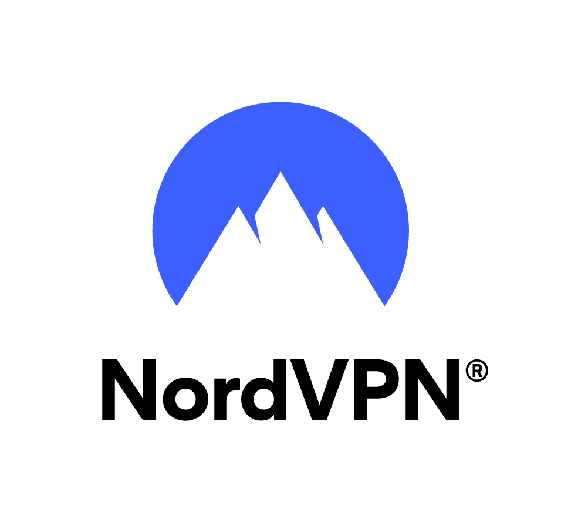
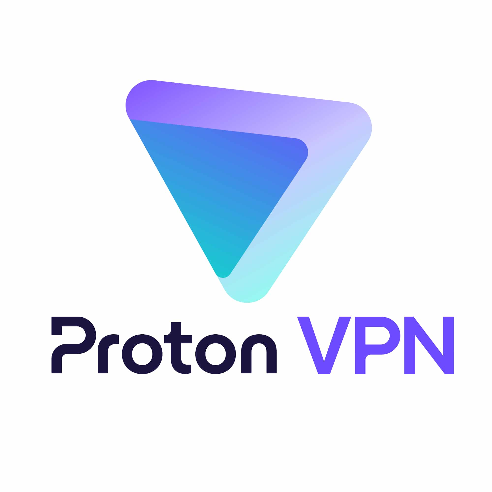

Čo je to VPN?
Zakaždým, keď posielate správu cez internet, prezeráte si fotky alebo nakupujete v e-shope, vkladáte svoje údaje do "priesvitnej obálky". Každý, kto okolo tejto obálky prejde – či už je to váš internetový operátor alebo šikovnejší človek s notebookom na verejnej Wi-Fi ( napr. v kaviarni, na letisku, vo vlaku... ) – si môže prečítať, čo sa v nej píše.
A presne preto existuje VPN. Predstavte si nepriestrelný kufrík s číselným zámkom. Keď ho zapnete, vaše dáta sa okamžite schovajú do tohto kufríka. Nikto na svete ich nedokáže po ceste otvoriť ani prečítať. Celý svet vidí už len bezpečne zamknutý kufrík, ktorý putuje internetom.
Prečo vlastne táto technológia vznikla?
- Predstavte si veľkú firmu, ktorá má dve budovy na opačných koncoch mesta. Potrebujú, aby si zamestnanci z týchto budov mohli bezpečne posielať dôležité dokumenty.
- Dlhé roky mali manažéri ťažkú hlavu: buď museli zaplatiť obrovské peniaze za vlastné riešenie, alebo riskovali, že im dáta niekto ukradne.
- S rozvojom internetu však prišla technológia VPN a ukázala svetu, že bezpečnosť sa dá robiť lacno a zároveň na profesionálnej úrovni.
Ako prepojiť počítače? 1. možnosť: Drahá súkromná cesta
- Vlastný kábel pod zemou: Zamyslite sa, že by si firma zaplatila robotníkov, ktorí rozkopú polovicu mesta a natiahnu hrubý kábel priamo z jednej budovy do druhej.
- Po tomto kábli nikto iný nechodí. Je to ako mať vlastnú súkromnú diaľnicu, na ktorej jazdí iba vaše auto a nikto iný na ňu nemá povolený vjazd.
- Výsledok: Dosiahnete maximálnu bezpečnosť, ale vaše financie utrpia obrovskú ranu.

2. možnosť: Lacná verejná cesta (Internet)
- Cesta cez preplnené námestie: Predstavte si druhú situáciu. Firma pošle zamestnanca s dôležitými papiermi pešo cez preplnené námestie plné ľudí a vreckárov.
- To je klasický internet. Je prístupný pre všetkých, je lacný a rýchly, ale bez dodatočnej ochrany riskujete, že vám niekto dokumenty vytrhne z ruky alebo si ich odfotí.
- Výsledok: Riešenie nestojí takmer nič, ale hrozí únik informácií. A práve preto ľudia vymysleli VPN.

Ako to VPN robí?
- VPN spája výhody oboch svetov. Využíva lacný verejný internet, ktorý máme doma všetci, ale dáta doň pustí len vtedy, ak sú bezpečne uzamknuté v našom spomínanom kufríku.
VPN sa v bežnom živote využíva najmä v dvoch situáciách:
- Pevné prepojenie dvoch budov (Keď riaditeľ spája pobočky)
- Práca na diaľku (Keď zamestnanec pracuje z obývačky)
Pevné prepojenie dvoch budov (Site-to-site)
- Predstavte si, že na obidve budovy namontujeme ku vchodu špeciálne uzamykacie stroje.
- Každý jeden list, ktorý z budovy odchádza, tento stroj automaticky zamkne do trezoru. Na druhej budove ho partnerský stroj zasa odomkne.
- Zamestnanci v kanceláriách nič neriešia a nič ručne nezapínajú – o šifrovanie sa starajú hlavné internetové krabičky (routery) úplne samé na pozadí.

Práca na diaľku z domu (Remote-access)
- S týmto prípadom sa už pravdepodobne stretol každý, kto niekedy zažil prácu z domu alebo online vyučovanie.
- Predstavte si, že sedíte doma v pyžame, zapnete si v notebooku špeciálny program, zadáte svoje heslo a v tej sekunde sa váš počítač bezpečne prepojí so školou alebo firmou.
- Zrazu môžete otvárať interné dokumenty and systémy presne tak, akoby ste sedeli priamo v kancelárii alebo v školskej lavici.

Načo je nám vlastne VPN aplikácia v mobile či počítači?
- Určite ste už videli reklamy, kde YouTuberi odporúčajú kúpiť si VPN aplikáciu do telefónu. Čo tým reálne získate?
- Súkromie na verejnej sieti: Keď sa pripojíte na Wi-Fi na stanici, na letisku alebo v kaviarni, hocikto na tej istej sieti vás môže sledovať. VPN tomu kompletne zabráni.
- Zmena virtuálnej polohy: Predstavte si, že sa cez aplikáciu jedným klikom pripojíte na server v Amerike. Internetové stránky si budú myslieť, že reálne sedíte v USA, a sprístupnia vám filmy alebo videá, ktoré sú na Slovensku zablokované.
- Skrytie pred operátorom: Váš poskytovateľ internetu nebude vedieť, aké stránky navštevujete.

Čo je to "Sieťový tunel"?
- V počítačovom svete sa slovo tunel používa vtedy, keď schováme jeden hotový list do vnútra druhého, väčšieho listu.
- Predstavte si, že na vonkajšiu obálku napíšete iba adresu tajného medziskladu (VPN servera). To, čo je napísané na vnútornom liste a pre koho je skutočne určený, nikto po ceste neuvidí. Všetko je bezpečne utajené vnútri veľkého balíka.

Priesvitný tunel bez zámku (Protokol GRE)
- Predstavte si technológiu GRE ako stroj, ktorý síce dokáže vložiť obálku do obálky, ale táto vonkajšia obálka je z priesvitného plastu.
- Každý, kto ide okolo, vidí, čo sa vnútri nachádza. Tento tunel síce dáta prenesie a uprace, ale sám o sebe ich nechráni. Aby bol prenos naozaj bezpečný, musíme k nemu pridať skutočné šifrovanie.
Ako prebieha zapnutie VPN? (Krok za krokom)
- Používateľ klikne na tlačidlo "Pripojiť" vo svojej aplikácii.
- Aplikácia nadviaže kontakt s VPN serverom a preukáže sa menom a heslom (alebo certifikátom), aby server vedel, že patrí k systému.
- Server používateľa overí a pridelí mu jeho dočasnú virtuálnu adresu.
- Obe strany si vymenia kód k zámku, tunel sa bezpečne uzamkne a od tej chvíle je prenos plne chránený.
Porovnanie technológií (Ktorý zámok je najlepší?)
Technológie, ktoré ten kufrík s vašimi dátami zamykajú, sa odborne nazývajú protokoly.
- PPTP : Systém z roku 1995. Predstavte si auto, ktorého zámok zlodeji už dávno dokážu otvoriť obyčajným skrutkovačom. Dnes sa už nesmie používať, pretože vaše dáta neochráni.
- L2TP + IPSec : Veľmi bezpečný, ale nesmierne ťažký systém. Dáta balí do dvoch obálok naraz, takže vášmu mobilu môže chvíľu trvať, kým ich spracuje a prečíta.
- SSTP : Vytvoril ho Microsoft. Maskuje sa tak dokonale, že navonok vyzerá ako úplne obyčajné prezeranie bežných webstránok. Vďaka tomu prejde cez akékoľvek zákazy a obmedzenia na sieti.
- OpenVPN : Dnešný svetový kráľ a overená klasika. Používa ho drvivá väčšina moderných aplikácií. Je mimoriadne bezpečný a spoľahlivý.
- IKEv2 : Najlepší priateľ pre naše smartfóny. Predstavte si, že cestujete vlakom, na sekundu stratíte signál alebo sa prepnete z domácej Wi-Fi na mobilné dáta. Toto spojenie nespadne a okamžite naskočí späť bez toho, aby ste si niečo všimli.
- WireGuard : Najnovší hit v technologickom svete. Je postavený s dôrazom na absolútnu jednoduchosť. Vďaka tomu prenáša dáta bleskovou rýchlosťou a navyše výrazne šetrí batériu vo vašom telefóne.
Ako na to?
Ak ste sa rozhodli, že chcete začať chrániť svoje súkromie, tento podrobný návod vás prevedie celým procesom od výberu aplikácie až po jej správne nastavenie.
Krok 1: Výber správnej aplikácie
Trh je preplnený stovkami programov, no nie všetky sú bezpečné. Tu sú overené aplikácie, ktoré odporúčajú odborníci a zvládne ich ovládať úplne každý:
Najlepšie platené služby
- NordVPN: Momentálne najpopulárnejšia služba na svete. Je bleskovo rýchla, má obrovské množstvo serverov a je skvelá na odblokovanie zahraničného Netflixu či YouTube. Aplikácia je veľmi moderná a prehľadná.
- Surfshark: Ponúka skvelý pomer ceny a výkonu. Jej najväčšou výhodou je, že ju môžete mať zapnutú na neobmedzenom množstve zariadení naraz (v počítači, mobile, tablete aj v TV).
- ExpressVPN: Prémiová a extrémne stabilná služba. Je znába špičkovým šifrovaním a bleskovou odozvou, no býva o niečo drahšia ako konkurencia.

bezplatné alternatívy:
- ProtonVPN (Zadarmo bez limitu dát): Vyvinuli ju vedci vo Švajčiarsku. Vo verzii zadarmo vám nedá žiadny limit na prenesené dáta, ale rýchlosť bude o niečo nižšia a na výber budete mať len servery v 3 krajinách (USA, Holandsko, Japonsko).
- Windscribe (10 GB dát mesačne zadarmo): Veľmi populárna voľba. Ponúka skvelé rýchlosti a viac krajín na výber, no každý mesiac vám po prenesení 10 GB dát VPN vypne, kým nezačne nový mesiac.

Krok 2: Samotná inštalácia (Návod krok za krokom)
- Vytvorte si účet: Prejdite na oficiálnu webstránku služby, ktorú ste si vybrali (napr. ProtonVPN), a zaregistrujte sa pomocou e-mailu.
- Stiahnite program: Stránka vám automaticky ponúkne na stiahnutie správnu verziu. Do mobilu si aplikáciu stiahnite klasicky cez Google Play (Android) alebo App Store (iPhone).
- Prihláste sa: Otvorte stiahnutú aplikáciu a zadajte svoje prihlasovacie údaje.
Krok 3: Prvé správne zapnutie
Keď aplikáciu otvoríte, uvidíte zoznam krajín alebo mapu sveta a jedno veľké hlavné tlačidlo.
- Pre maximálnu rýchlosť (Rýchle pripojenie): Kliknite na tlačidlo "Quick Connect" (Rýchle pripojenie). Aplikácia vás automaticky spojí s najbližším serverom (zväčša na Slovensku alebo v Česku). Vaše dáta budú okamžite zašifrované, no internet sa vôbec nespomalí.
- Pre odblokovanie obsahu (Zmena polohy): Ak chcete napríklad pozerať video, ktoré je povolené len pre obyvateľov Veľkej Británie, nájdite v zozname krajín "United Kingdom" a kliknite naň. Od tej sekundy si všetky weby myslia, že sa nachádzate v Londýne.
Krok 4: Čo skontrolovať po zapnutí? (Veľký test)
Predstavte si, že chcete mať 100% istotu, že vás aplikácia skutočne chráni. Urobte tento bleskový test:
- Pred zapnutím VPN navštívte stránku mojaip.sk. Uvidíte tam svoju reálnu IP adresu, vaše skutočné mesto a meno vášho operátora (napr. Telekom, Orange, O2...).
- Teraz v aplikácii zapnite VPN (napríklad prepnite sa do Nemecka).
- Znovu načítajte stránku mojaip.sk. Ak sa údaje zmenili, vidíte nemeckú vlajku a cudzieho operátora, vaša VPN funguje dokonale a ste v bezpečí.